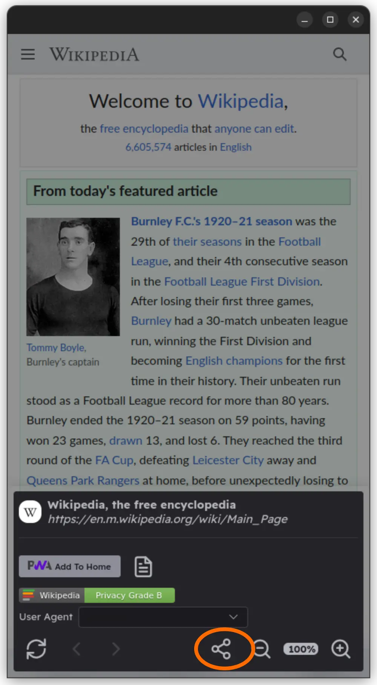
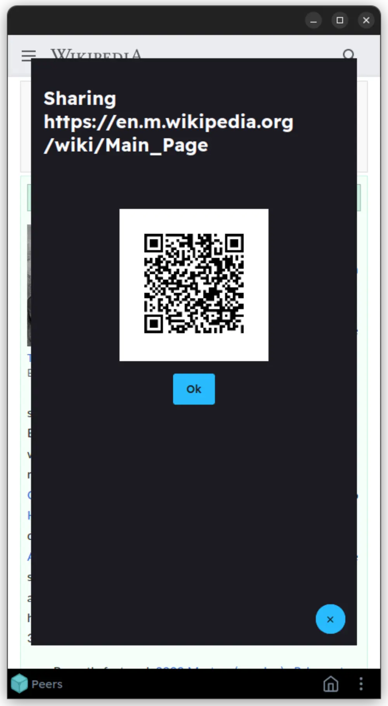
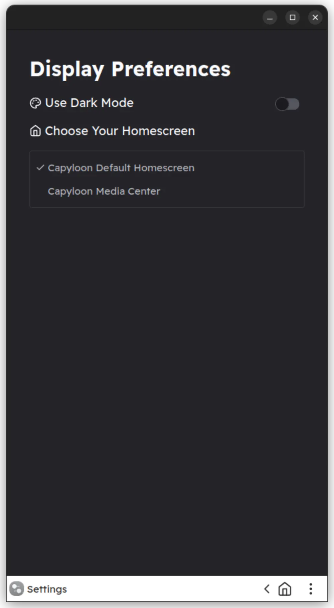
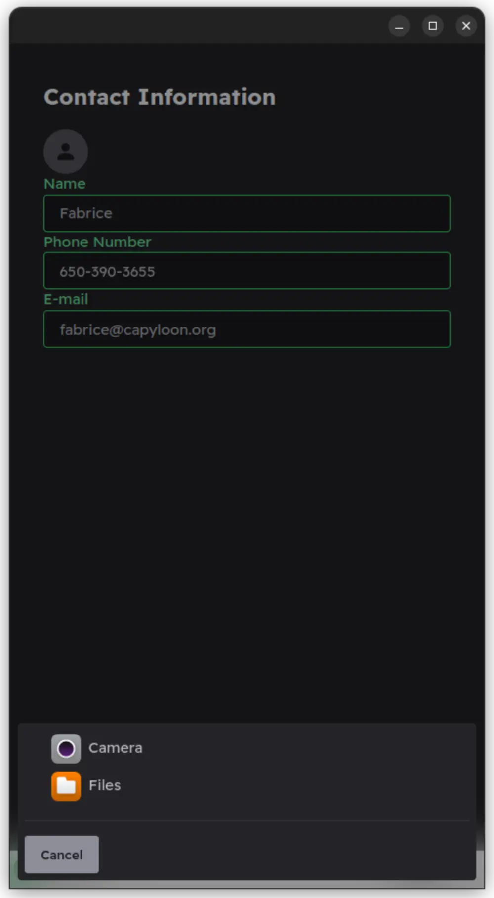
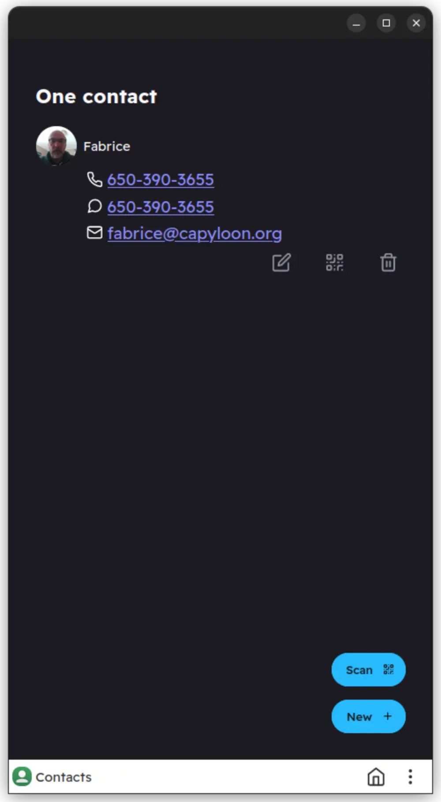
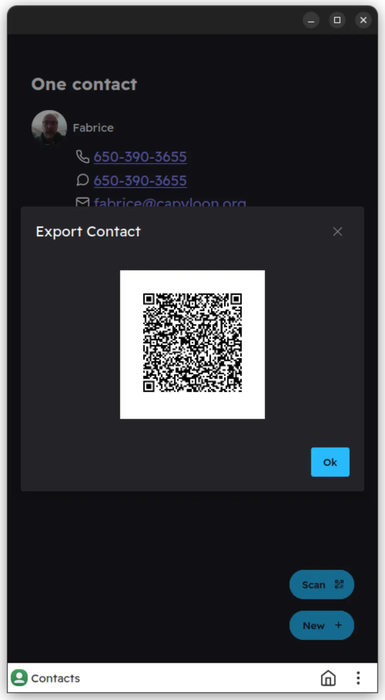
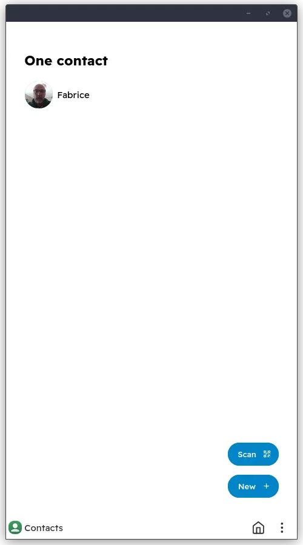

January 2023 Release - What's new?
Sharing Content Made Easy
Share any page URL
 Sharing Content Made Easy
Share any file using IPFS, with local network discovery and transfer.
Homescreen Switcher
Choose one in settings
Example: Media Center Homescreen
New Contacts App
   Available from https://debian.capyloon.org/images/installer/
Help needed to fix our Mobian recipe for non-installer images! (see this github issue)
Thanks!